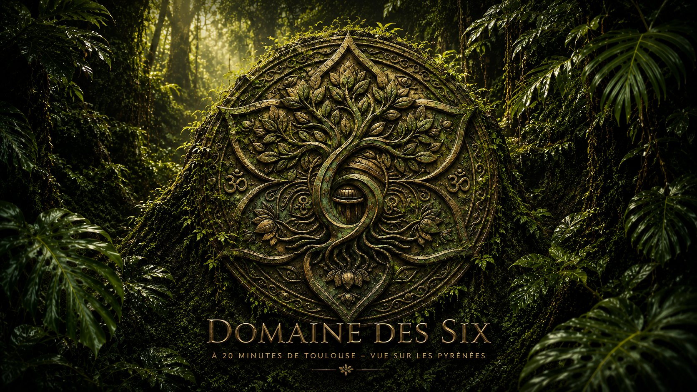
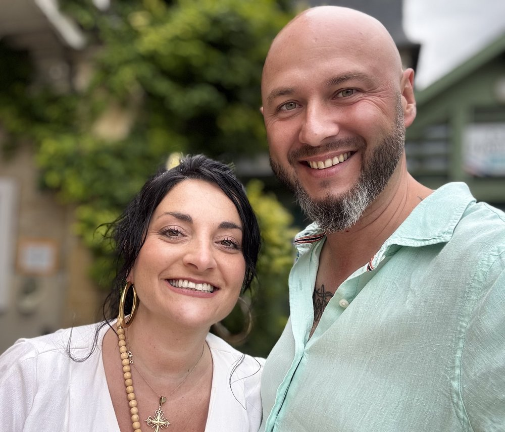

Chambres d'hôtes
Des studios lumineux — Sens, Amazone, Libération, Désir — et la chambre Évasion, pour une escapade au calme avec accès à la piscine et au parc.
Voir les logements →
Le domaine
À Lherm, à seulement 20 minutes au sud de Toulouse et 11 km de Muret, le Domaine des Six déploie son parc de 4 600 m² planté d'oliviers et d'arbres fruitiers. Un environnement paisible et préservé, sans aucune nuisance, avec une vue dégagée sur la campagne et un panorama sur les Pyrénées.
Au cœur du domaine, une piscine plein sud et ses plages solarium, un pool house, un kiosque en cèdre et une paillote dessinent des espaces de vie conviviaux, en plein air comme à l'abri.
Que vous veniez pour une nuit, une semaine, un événement à célébrer ou une parenthèse bien-être, le domaine s'adapte à votre envie de pause.
Séjourner
Un même lieu, plusieurs manières d'en profiter — selon le moment et l'envie.
Des studios lumineux — Sens, Amazone, Libération, Désir — et la chambre Évasion, pour une escapade au calme avec accès à la piscine et au parc.
Voir les logements →Un gîte tout équipé de deux chambres, en pleine autonomie, idéal pour une famille ou un séjour prolongé au plus près de la nature.
Gîte avec piscine →Mariages, séminaires, anniversaires : un vaste parc, un kiosque, une paillote et un pool house pour vos célébrations, en plein air comme à l'abri.
Mariage & réception → · Séminaire →Yoga, méditation, séjours ressourcement : une grande capacité d'accueil, une salle de sport et des espaces apaisants face aux Pyrénées.
Retraite bien-être →Les hébergements
Un gîte, quatre studios et une chambre, soit 172 m² locatifs et jusqu'à 17 personnes — à choisir selon votre séjour. Tous avec accès à la piscine, au parc et à la salle de sport.
Deux chambres (parents / enfants) et salle d'eau privative — l'idéal pour une famille ou un séjour prolongé.
dès 110 € / nuit
Un studio en duplex avec deux chambres à l'étage et salle d'eau / WC.
dès 90 € / nuit
Espace lumineux avec salle d'eau / WC, ouvert sur le parc.
dès 55 € / nuit
Studio confortable avec salle d'eau / WC privative.
dès 55 € / nuit
Cocon douillet avec salle d'eau / WC, au calme du rez-de-chaussée.
dès 50 € / nuit
Une chambre cosy avec salle d'eau / WC, parfaite pour une nuit ou deux.
dès 45 € / nuit
Fiches détaillées des logements
Le cadre & les équipements
Galerie
Quelques images pour vous projeter avant de venir.
Réservation · Ouverture décembre 2026
Le Domaine des Six ouvre en décembre 2026. Profitez-en pour réserver à l'avance vos séjours, week-ends ou événements — nous vous confirmons tout par retour.
| Logement | Basse | Moyenne | Haute |
|---|---|---|---|
| Ora · Gîte T3 | 110 € | 130 € | 150 € |
| Sens · Studio T3 | 90 € | 105 € | 120 € |
| Amazone · Studio | 55 € | 63 € | 72 € |
| Libération · Studio | 55 € | 63 € | 72 € |
| Désir · Studio | 50 € | 59 € | 68 € |
| Évasion · Chambre | 45 € | 52 € | 60 € |
Tarifs indicatifs par nuit, susceptibles d'évoluer selon la période et la durée du séjour.
Questions fréquentes
Le Domaine des Six, votre référence pour un séjour nature dans le Sud-Toulousain.
Notre histoire
Au cœur du domaine, une bastide de plus de 300 ans veille sur un parc arboré et clos, face aux Pyrénées. Le lieu doit son nom au « Bégué » : autrefois, un sage du village, sorte de juge de paix que l'on venait consulter pour apaiser les différends et réconcilier les familles.
C'est dans cet esprit d'accueil et d'harmonie que nous faisons revivre le domaine — un havre où l'on vient se ressourcer, célébrer et se retrouver, à seulement 20 minutes de Toulouse.

Vos hôtes
Bienvenue chez nous ! Nous sommes Virginie et François, les hôtes du Domaine des Six. Amoureux de ce lieu et de la nature qui l'entoure, nous avons à cœur de vous accueillir comme à la maison.
Nous partageons avec plaisir nos bonnes adresses du Sud-Toulousain et veillons à faire de votre séjour un vrai moment de détente, entre piscine, grand parc et calme absolu. Au plaisir de vous recevoir.
Contact
Une question, une date à réserver, un projet d'événement ? Écrivez-nous, nous vous répondrons avec plaisir.